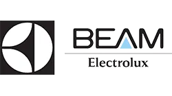
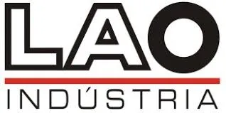
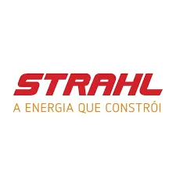

Representações Técnicas · Indústria
Soluções industriais com fabricantes líderes e atendimento consultivo.
A Girasul representa marcas de alto desempenho em estruturas eletromecânicas, PRFV, medição, iluminação e ventilação natural, polipropileno e engenharia & inspeção — conectando sua necessidade à solução ideal.
- Representação técnica de fabricantes selecionados
- Atendimento consultivo para especificar a solução correta
- Foco em aplicações industriais, comerciais e de infraestrutura

Onde podemos ajudar a sua operação
Atuamos em diferentes frentes da sua planta, sempre com o respaldo técnico dos fabricantes que representamos.
Eletromecânicos
Leitos para cabos, eletrocalhas, perfilados, suportes e projetos especiais com galvanização e pintura eletrostática.
Estruturas em PRFV
Perfis, grades, escadas, passarelas e guarda-corpos em fibra de vidro — leves, anticorrosivos e de longa durabilidade.
Engenharia e Inspeção
Inspeções NR-10/NR-13/NR-35, laudos, ensaios não destrutivos, adequação de máquinas e sistemas antiqueda.
Iluminação e Ventilação Natural
Lanternins, exaustores, insufladores, domos e claraboias para galpões, indústrias e supermercados.
Medição de Água e Gás
Hidrômetros e medidores com telemedição integrada, alta precisão e homologação pelas principais concessionárias.
Soluções Elétricas
String boxes, caixas de policarbonato, quadros de distribuição, tomadas industriais e acessórios certificados.
Polipropileno
Tanques, máquinas, sistemas de filtragem, exaustão industrial e contenções em PP com alta resistência química.
Quem é a Girasul
Atuamos representando fabricantes de alto desempenho em soluções industriais, conectando suas linhas de produtos às necessidades reais de clientes em diferentes segmentos — com atendimento técnico e consultivo desde o primeiro contato.
Fabricantes que representamos
Marcas selecionadas pela qualidade, certificações e confiabilidade comprovada no mercado industrial.



Por que trabalhar com a Girasul?
Mais do que um canal de vendas — somos um parceiro técnico que entende o seu processo e indica a solução certa para cada aplicação.
Representação técnica especializada
Conhecemos profundamente o portfólio de cada fabricante e ajudamos a especificar a solução mais adequada para o seu projeto.
Foco em aplicação industrial real
Atendemos indústrias, galpões, saneamento, condomínios e infraestrutura — com experiência prática em diferentes segmentos.
Portfólio amplo e complementar
Sete linhas de produtos que se complementam, permitindo atender múltiplas necessidades da sua planta com um único ponto de contato.
Atendimento consultivo desde o início
Da primeira conversa à entrega, acompanhamos o processo junto ao fabricante para garantir que a solução chegue conforme o especificado.
Segmentos e aplicações que atendemos
As soluções que representamos estão presentes em diferentes tipos de indústrias e instalações em todo o Brasil.
Vamos falar sobre as necessidades da sua planta?
Conte o que você precisa e vamos indicar a melhor linha de produtos entre os fabricantes que representamos.